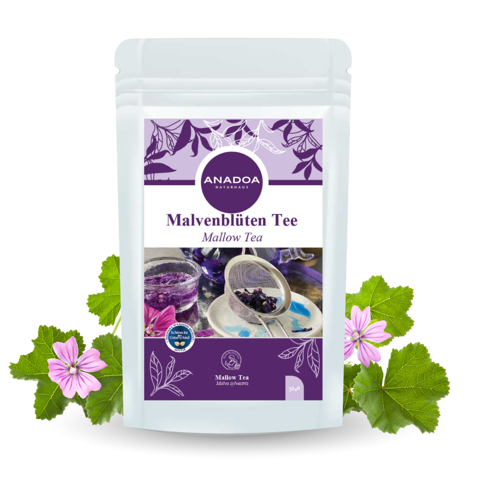

Malvenblüten Tee (Ebegümeci) – Die zarte Retterin der Schleimhäute
Die wilde Malve (Malva sylvestris), in Anatolien als "Ebegümeci" bekannt, ist ein wahrer Überlebenskünstler. Man findet sie an trockenen Wegrändern und auf steinigen Wiesen, wo sie mit ihren intensiv purpurfarbenen bis tiefblauen Blüten markante Farbakzente setzt. Schon die großen Ärzte des antiken Griechenlands verehrten die Malve als universelles Heilmittel zur "Besänftigung innerer Hitze".
Das faszinierende an dieser Pflanze ist ihre unglaubliche Milde. Während viele Heilkräuter mit scharfen ätherischen Ölen oder aggressiven Bitterstoffen arbeiten, heilt die Malve durch pure Sanftheit. Für unseren Premium Malvenblütentee werden ausschließlich die voll erblühten, tiefblauen Blütenstände per Hand gesammelt und im Schatten getrocknet. Diese Blüten sind nicht nur optisch ein absolutes Kunstwerk, sondern bergen ein tiefes, phytotherapeutisches Geheimnis in sich: Schleim.
Malvenblüten Tee als mechanische Pflaster-Effekt für den Hals
Die Malvenblüte (ähnlich wie der Eibisch) ist in der Pflanzenheilkunde der absolute Star unter den sogenannten Mucilaginosa (schleimhaltige Heilpflanzen). Die getrockneten Blüten bestehen zu über 10 % aus hochkomplexen Polysacchariden (Vielfachzuckern), die in Wasser massiv aufquellen und eine viskose, geleeartige Substanz bilden.
Wenn Sie an einem quälenden, trockenen Reizhusten (dem typischen "Kitzeln" im Hals, das einen nachts wachhält), an Heiserkeit oder an einer schmerzhaften Rachenentzündung (Pharyngitis) leiden, ist Malventee die Rettung. Der im Tee gelöste Pflanzenschleim legt sich wie ein schützender, flüssiger Verband exakt über die freiliegenden, gereizten Nervenenden im Hals. Dieser mechanische Schutzschild blockiert äußere Reize, stoppt den Hustenreflex und erlaubt der extrem wunden Schleimhaut, in Ruhe zu heilen.
Linderung bei Sodbrennen und Gastritis durch Malvenblüten Tee
Die beruhigende "Pflaster-Wirkung" der Malve endet nicht im Hals. Die zähen Schleimstoffe sind erstaunlich resistent gegenüber der Magensäure. Wenn sie hinab in den Magen gleiten, legen sie sich wie ein schützender Film über die Magenschleimhaut.
Bei akutem Sodbrennen (Reflux), leichtem Magengeschwür oder einer chronischen Magenschleimhautentzündung (Gastritis), bei der die körpereigene Schleimschicht des Magens angegriffen ist, wirkt ein kalter Mazerations-Auszug aus Malvenblüten wahre Wunder. Er schützt das Gewebe vor der aggressiven Säure, lindert brennende Schmerzen und entzieht der Entzündung die Reibung.
Malvenblüten Tee als optische Spektakel der blauen Blüten
Malvenblütentee ist nicht nur Medizin, sondern auch ein absolutes visuelles Erlebnis. Die in den Blüten enthaltenen natürlichen Farbstoffe (Anthocyane, speziell Malvin) reagieren extrem empfindlich auf den pH-Wert des Wassers. Wenn Sie das heiße Wasser auf die Blüten gießen, färbt sich der Tee zunächst wunderschön tiefblau, geht dann langsam in ein klares Smaragdgrün über und endet oft in einem tiefen Violett.
Der Zaubertrick: Wenn Sie nun ein paar Tropfen frischen Zitronensaft (Säure verändert den pH-Wert) in den blauen Tee geben, wechselt die Farbe magisch innerhalb von Sekunden zu einem strahlenden, leuchtenden Pink! Dies macht den Malventee nicht nur zu einem fantastischen Genuss, sondern auch zu einem zauberhaften Erlebnis (z.B. als Basis für blaue Cocktails oder magische Zaubertränke auf Kindergeburtstagen).
Die ideale Zubereitung und Anwendung von Malvenblüten Tee
Da Pflanzenschleime (wie bei Leinsamen oder Eibisch) hochkomplexe Kohlenhydratstrukturen sind, reagieren sie extrem empfindlich auf Hitze. 100°C kochendes Wasser zerstört das Molekülnetzwerk, und die beruhigende Wirkung geht zu einem großen Teil verloren!
Die medizinische Zubereitung (Kaltansatz / Mazeration): Wenn Sie den Tee gegen Husten oder Magenschmerzen einsetzen, geben Sie 2 bis 3 Teelöffel der Blüten in ein Glas mit kaltem oder zimmerwarmem Wasser. Lassen Sie das Glas abgedeckt für gute 3 bis 5 Stunden (gerne über Nacht) stehen. So können die Schleime intakt in das Wasser übergehen. Gießen Sie den Ansatz durch ein Sieb und erwärmen Sie den leicht sämigen Tee danach nur sehr sanft (auf handwarme Trinktemperatur). Mit einem Teelöffel Honig verfeinert, ist dies der ultimative Heiltrank für den Hals.
Warum der Malvenblüten Tee von Anadoa die beste Wahl ist
Auf dem Markt finden sich viele billige Tees, die unter dem Namen "Malve" verkauft werden, oft handelt es sich dabei aber um die wesentlich billigere, rote Hibiskusblüte (die oft als "Rote Malve" deklariert wird) – diese hat jedoch fast keine heilenden Schleimstoffe, sondern nur viel Säure!
Der Anadoa Ebegümeci Tee besteht ausschließlich aus den echten, edlen, tiefblau-violetten Blüten der Wilden Malve (Malva sylvestris). Wir trocknen im Vollschatten, um die wertvollen, farbgebenden Anthocyane und die empfindlichen Polysaccharide perfekt zu erhalten. Purer Luxus, direkte Heilkraft aus der Hand der Natur.
Häufig gestellte Fragen (FAQ)
Wie schmeckt der Malvenblüten
Tee?
Der Tee ist geschmacklich extrem sanft, sehr dezent und leicht grasig-blumig. Er besitzt keinerlei Säure oder bittere Schärfe. Die Textur im Mund ist (besonders beim Kaltansatz) leicht sämig und unglaublich weich. Er schreit geradezu nach einer Verfeinerung mit etwas Honig.
Ist Malve dasselbe wie
Hibiskus?
Achtung, große Verwechslungsgefahr! Im Handel wird Hibiskus oft fälschlicherweise als 'rote Malve' verkauft. Hibiskus ist tiefrot, extrem sauer und blutdrucksenkend. Unsere Wilde Malve (Ebegümeci) ist blau, völlig mild und enthält extrem heilsame Pflanzenschleime gegen Husten.
Darf ich den Tee auch mit
heißem Wasser übergießen?
Wenn es Ihnen nur um das visuelle Erlebnis (die blaue Farbe) und ein mildes Getränk geht, können Sie heißes (ca. 80°C) Wasser verwenden. Wenn Sie den Tee jedoch aus medizinischen Gründen (wegen des Schleims gegen Husten/Gastritis) trinken, müssen Sie zwingend den beschriebenen Kaltansatz (Mazeration) durchführen!
Hilft der Tee bei produktivem
Husten (mit Schleimauswurf)?
Nein. Malventee blockiert durch seinen schützenden Film den Hustenreflex. Bei zähem, festsitzendem Schleim (den man abhusten MUSS), ist er weniger geeignet. Sein Haupteinsatzgebiet ist der quälende, trockene Reizhusten (besonders nachts), der keine Flüssigkeit fördert.
Können Schwangere und Babys
den Tee trinken?
Ja, Malve gilt in der Phytotherapie als eine der sichersten und reizärmsten Heilpflanzen überhaupt. Sie ist absolut koffeinfrei und eine hervorragende, milde Alternative zu aggressiven Hustensäften für Kleinkinder.